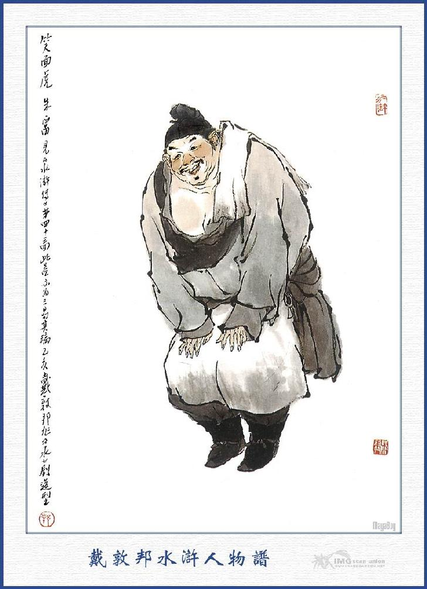
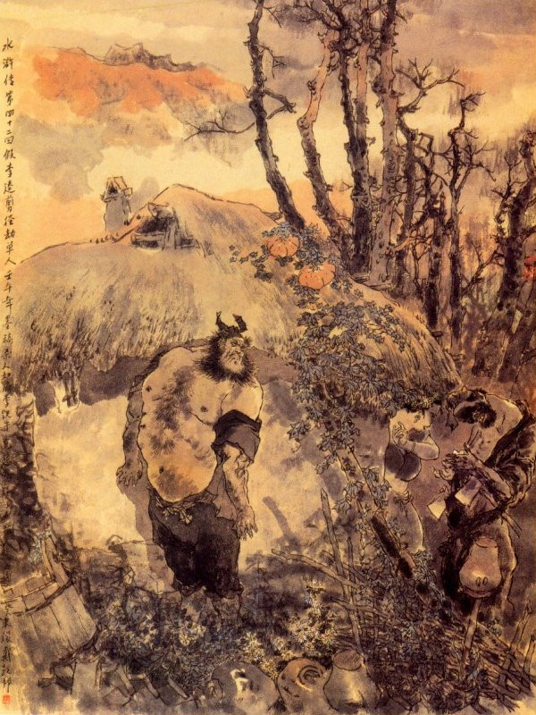
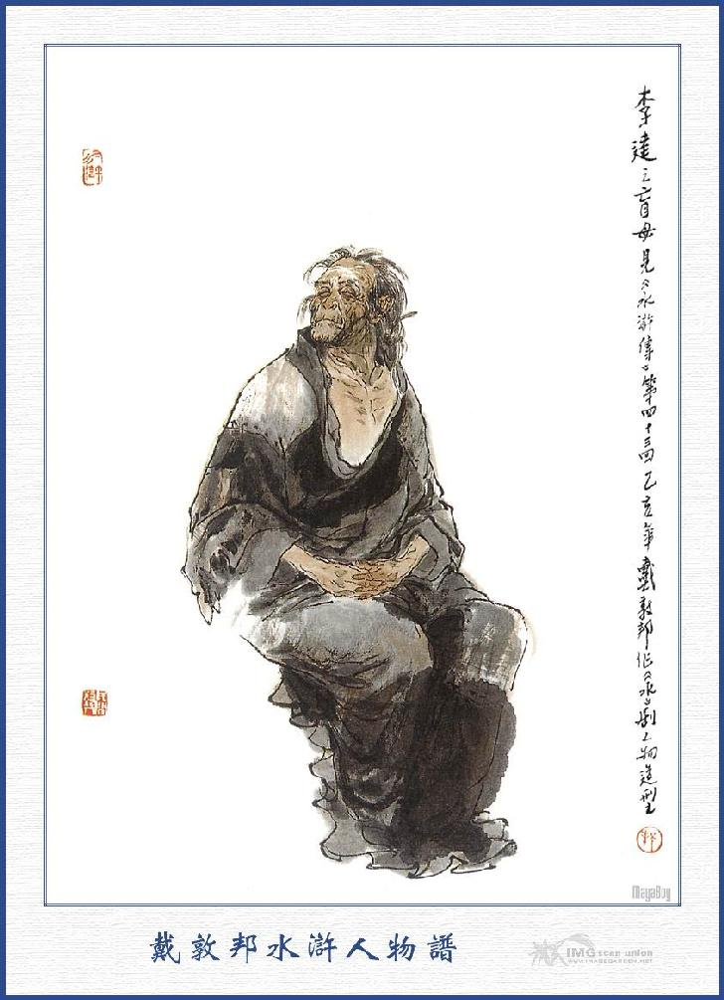
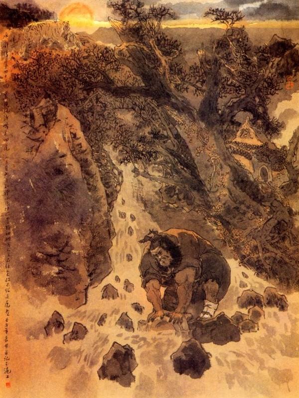

Bấy giờ Tống Giang bảo với Lý Quỳ rằng:
- Gia Trưởng đi đường bị trúng thử mà chết, phải báo vợ con đến để cứu. Nếu ngươi nhất định ra đi thì phải nghe ta ba điều này: Một là từ nay đi qua đâu, ngươi không được uống rượu; Hai là tính ngươi nóng nảy xưa nay, tất không ai chịu cùng đi với ngươi, vậy ngươi phải chịu khó đi một mình cho được việc; Ba là hai cây đại phủ của ngươi, từ nay không được mang đi nữa. Đi đường ngươi phải cẩn thận giữ gìn, về mau mới được.
Lý Quỳ đáp rằng:
- Tưởng chi, chứ có ba việc ấy thì làm gì không giữ nổi, xin xuống cứ yên tâm, để cho tôi đi ngay bây giờ cho chóng.
Nói xong liền lấy dao giắt vào bao, tay cầm một thanh đao lớn, lấy một đỉnh bạc lớn và dăm ba lạng bạc lẻ rồi uống mấy chén rượu từ tạ mà chào các vị Đầu Lĩnh đi ra.
Tiều Cái, Tống Giang cùng mọi người tiễn chân ra bến Kim Sa rồi trở về Đại Sảnh cùng ngồi nói chuyện với nhau. Tống Giang có ý lo ngại mà nói với mọi người rằng:
- Lý Quỳ đi phen này, tất nhiên lại sinh sự, chứ không chơi, vậy trong đám anh em có ai là đồng hương với hắn thì xin đi theo để dò la tin tức giúp cho?
Đỗ Thiên nói rằng:
- Đây có Chu Quý là người ở huyện Nghi Thủy ở đất Nghi Châu, có lẽ đồng châu với Lý Quỳ đó.
Tống Giang nghe nói kêu lên rằng:
- Chết nỗi! Thế mà tôi quên hẳn, khi ở Bạch Long Miếu, Lý Quỳ đã nhận Chu Quý là người đồng hương. Vậy cho tìm Chu Quý lên đây mới được.
Nói đoạn liền sai tiểu lâu la tửu điếm, để mời Chu Quý về trại. Khi Chu Quý về tới nơi, Tống Giang nói rằng:
- Nay Lý Quỳ về nhà đón mẹ, song vì hắn ta tính khí hung hăng, nên không muốn cho ai cùng đi với hắn. Nhưng ta e khi đi đường, hoặc có xảy ra việc gì bất lợi, vậy hiền đệ là người đồng hương, nên rảo qua về đó, để xem tin tức ra sao?
Chu Quý đáp rằng:
- Tiểu đệ là người ở huyện Nghi Thủy, có người em là Chu Phú mở tiệm rượu ở ngoài Tây Môn bản huyện, còn Lý Quỳ là người ở bên Đổng Miếu, thuộc về thôn Bách Trượng cùng huyện với tôi, có người anh là Lý Đạt vẫn đi làm thuê xưa nay, nhưng tính nết Lý Quỳ vẫn hục hặc tư thủa nhỏ, đánh chết người rồi lại trốn tránh giang hồ, cho nên không về nhà được? Nay Ca Ca sai tiểu đệ đi thám thính thì lại càng tiện lắm, vì tiểu đệ cũng muốn về thăm anh em một thể, song còn ở dưới hàng thì lấy ai trông coi cho được?
Tống Giang nói:
- Việc ấy sẽ có người, ta sẽ khắc cho Hầu Kiện, Thạch Dũng hãy thay đỡ mấy hôm, ngươi cứ đi ngay cho được việc.
Chu Quý vâng lời, bái biệt các vị Đầu Lĩnh, quay về tửu điếm trao hàng hóa cho Hầu Kiện, Thạch Dũng rồi thu thập hành lý mà đi.
Từ đó Tống Giang lại cùng Tiều Cái hằng ngày ở trong trại đánh chén làm vui rồi lại cùng Ngô Học Cứu, đem ba cuốn Thiên Thư ra để học tập với nhau.
Bây giờ nước thẳm non sâu,
Nợ xưa hồ sạch, đường sau còn dài.
Đem thân luyện với cơ trời,
Rồi ra chữ Mệnh, chữ Thời hỏi chi
Nói về Lý Quỳ từ khi lìa đất Lương Sơn, thẳng lối trở về Nghi Thủy. Đi đường cẩn thận không hề động chút men. Một hôm về tới đám người đứng túm đen túm đỏ, đương xem bản yết thị ở đó, Lý Quỳ chen vào để nghe, thấy có người đọc lên rằng:
- "Tên chính tặc thứ nhất là Tống Giang, người huyện Vận Thành. Tên tùng đảng thứ nhì là Đới Tung; làm Lưỡng Viện Áp Ngục ở đất Giang Châu. Tên tùng đảng thứ ba là Lý Quỳ, người huyện Nghi Thủy, đất Nghi Châu."
Lý Quỳ nghe thấy đương nóng ruột gan, chưa biết nghĩ ra thế nào thì chợt có một người chạy đến ôm chặt sau ngang lưng mà bảo rằng:
- Trương Đại Ca làm gì ở đây?
Lý Quỳ nghe nói, vội quay lại nom, té ra là Hãn Địa Hốt Luật Chu Quý ở đó, chàng liền hỏi rằng:
- Bác đến đây làm gì thế?
Chu Quý nói:
- Anh hãy ra đằng này tôi nói chuyện.
Nói xong hai người cùng chạy ra đến hàng rượu ở một thôn gần đó rồi tìm vào một chỗ tĩnh mà nói chuyện với nhau.
Chu Quý trỏ vào Lý Quỳ mà bảo rằng:
- Anh quái! To gan thực, trên bảng người ta yết thị rõ ràng, thưởng một vạn quan, bắt được Tống Giang; và thưởng năm ngàn quan bắt được Đới Tung; và thưởng ba ngàn quan bắt được Lý Quỳ, thế mà anh dám lần vào đứng đấy xem, lỡ ra có kẻ bắt được thì sao?
Tống Công Minh Ca Ca sợ anh hay lôi thôi, nên không dám cho người cùng đi với anh, sau lại e anh đến đây, lỡ ra sinh sự thì khốn, nên mới cho tôi đi theo để dò thăm tin tức, vậy tôi đi sau anh một ngày mà sao anh bây giờ cũng mới đến đây?
Lý Quỳ đáp rằng:
- Vì Ca Ca dặn tôi không được uống rượu, cho nên mới đi chậm như thế! Nhà anh ở chỗ nào, sao anh lại biết chỗ hàng rượu này được?
- Hàng rượu này của người anh em tôi là Chu Phú đây, tôi vốn là người ở đất này, sau vì buôn bán thua lỗ, nên phải lên núi Lương Sơn, đến nay mới về quê thăm nhà một lượt.
Nói đoạn liền gọi Chu Phú ra chào Lý Quỳ và sai người nhà làm rượu khoản đãi.
Bấy giờ Lý Quỳ bảo với Chu Quý rằng:
- Ca Ca dặn tôi không được uống rượu, nhưng nay đã về đến đây rồi thì uống rượu một vài chén cũng được chứ sao?
Chu Quý cũng chiều lòng mà mặc cho Lý Quỳ uống rượu. Hôm đó Lý Quỳ ăn uống xong, bèn ở tửu điếm Chu Phú một tối rồi tờ mờ sáng hôm sau trở dậy mà trở về làng.

CHU PHÚ
Chu Quý dặn Lý Quỳ rằng:
- Bây giờ anh đừng đi đường tắt, cứ theo lối cây đa lớn rồi rẽ sang bên đông, đi thẳng đường cái về ngay Bách Thượng Thôn, để đón mẫu thân mà về ngay sơn trại mới được.
Lý Quỳ đáp rằng:
- Tôi phải đi đường tắt cho chóng đến nhà, chứ hơi đâu mà đi đường cái cho tốn công.
- Đi đường tắt có nhiều cọp, lại thường có bọn cướp ở đó, đi sao cho tiện?
Lý Quỳ cả quyết mà rằng:
- Bác tính tôi đây còn sợ gì những giống ấy?
Nói đoạn liền khoác nón giắt dao, từ biệt Chu Phú cùng Chu Quý mà đi.
Đi được mươi dặm đường thì trời vừa rạng sáng, chợt thấy một con thỏ trắng chạy qua trước mặt, Lý Quỳ liền ra sức đuổi riết rồi cười nói rằng:
- Con quái này lại làm cho mình phải chạy một thôi đường thẳng.
Chàng nói xong lại rảo cẳng chạy mau, đến gần một chỗ có tới năm sáu mươi cây lớn, mọc chùm dúm vào với nhau, lá vàng đỏ ối cả lên. Chợt đâu thấy có một đại hán quát lên rằng:
- Anh nào đi đó, biết điều thì đưa tiền mãi lộ lại đây, không thì ta lột hết bây giờ?
Lý Quỳ nghe nói, ngẩng lên nom thì thấy người ấy đầu đội khăn mỏ rìu bằng lụa hồng, mình mặc áo vải ngắn, tay cầm đôi đại phủ, mặt bôi lọ lem như quỷ vậy.
Chàng thấy vậy bèn quát lên rằng:
- Thằng này ở đâu, dám đến đây cướp bóc thế này?
Anh kia cười nhạt đáp rằng:
- Mày muốn nghe tên họ của ta, cho vỡ mật nát hồn hay sao? Lão gia đây chính là Hắc Toàn Phong Lý Quỳ đó. có khôn hồn thì để tiền mãi lộ và hành lý lại đây, ta sẽ tha cho mà đi.
Lý Quỳ nghe vậy cả cười mà rằng:
- Thằng này gớm thực mày là người ở đâu đến đây mà dám mạo xưng tên họ lão gia để làm càn như thế?
Nói đoạn giơ dao lên, xông vào đánh anh kia, anh kia chống cự nhưng không nổi, vội đâm đầu để chạy, bất đồ bị Lý Quỳ chém cho một nhát vào trái chân, nằm lăn xuống đất.
Đoạn rồi Lý Quỳ lấy chân đạp lên bụng mà thét hỏi rằng:
- Đã biết lão gia hay chưa?
Anh kia biết thực là Lý Quỳ ở đó, liền kêu van lên rằng:
- Chúng tôi cũng họ Lý, nhưng thực sự không phải Hắc Toàn Phong, sau thấy Gia Gia là một người có tiếng trong đám giang hồ, hể nói đến tiếng Gia Gia là người phải sợ mà quỷ cũng phải khiếp; nhân thế chúng tôi học lỏm tên ngài để kiếm ăn cho tiện. Hễ khi nào có một người khách một đi qua đây, nghe thấy nói đến ba chữ Hắc Toàn Phong là họ phải bỏ hành lý mà chạy trốn ngay lập tức, không hề phải giết hại đến ai, còn chúng tôi đây tên là Lý Quỷ, người ở gần thôn đây.
Lý Quỳ quắc mắt thét lên rằng:
- Đồ gian tặc vô lễ này, dám ở đây cướp bóc làm xằng; học lối song phủ của ta để làm nhơ bẩn danh hiệu của ta. Nay ta gặp ngươi ở đây, hãy cho nếm một miếng búa của ta, cho mà biết phép.
Nói đoạn giơ tay cầm lấy cây song phủ toan chém giết Lý Quỷ. Lý Quỷ vội vàng năn nỉ mà kêu van lên rằng:
- Gia Gia ôi! Nếu Gia Gia giết tôi tức là giết cả hai người chúng tôi đó.
Lý Quỳ nghe nói, dừng tay lại mà hỏi rằng:
- Thế nào là giết cả hai người chúng mày?
- Bẩm Gia Gia! Nguyên con cũng không phải là nghề ăn cướp, song vì trong nhà còn mẹ già hơn chín mươi tuổi, không ai nuôi nấng trông nom, bởi thế con phải mượn tiếng Gia Gia, dọa nạt người ta để kiếm tiền đem về nuôi mẹ, chứ không có bụng nào giết hại đến ai. Nay nếu Gia Gia không thương tình mà chém chết con đây thì mẹ con tất là chết đói, xin Gia Gia xét thương cho.
Lý Quỳ vốn là tay giết người không nháy mắt, song nghe thấy lời nói thảm thương như vậy thì hơi động tấm lòng mà tự nghĩ một mình rằng:
- Ta đây cốt về nhà để tìm thân mẫu, vậy mà ta lại giết mẹ người khác thì trời đất nào chứng giám cho ta. Thôi, bất nhược tha cho nó làm phúc.
Nghĩ đoạn liền tha cho Lý Quỷ dậy, Lý Quỷ vội vàng tay cầm búa mà cúi lạy ta Lý Quỳ.
Lý Quỳ bảo Lý Quỷ rằng:
- Ta tức là Hắc Toàn Phong đây, từ đây ngươi không được làm mất danh giá tên ta mới được.
Lý Quỷ đáp rằng:
- Con ngày nay được ngài tha thứ cho thế này, con xin về nhà xoay làm nghề khác, còn khi nào dám giả danh hiệu Gia Gia như thế nữa.
Lý Quỳ lại nói rằng:
- Ngươi đã có lòng hiếu thuận như thế thì ta cho ngươi mười lạng bạc đây, đem về mà làm nghề khác kiếm ăn.
Nói xong lấy ra một đỉnh bạc mà đưa cho Lý Quỷ, Lý Quỷ lạy tạ rồi đi. Bấy giờ Lý Quỳ cười nói một mình rằng:
- Thằng quái thế! Vô phúc lại gặp ngay tay mình. Nhưng nói là người hiếu thuận như thế nếu mình giết nó thì tất trái lòng trời đất. Phen này chắc nó phải tìm nghề khác kiếm ăn, chứ khi nào còn dám làm như thế nữa.
Chàng lẩm bẩm một mình rồi lại vác dao theo con đường nhỏ bên cạnh núi mà đi. Chàng đi mãi đến gần trưa, nghe trong bụng vừa đói vừa khát mà bốn mặt toàn thị non cao đường tắt, không có một hàng rượu nào để nghỉ. Đi một lát, chợt thấy ở khuỷnh núi phía trước, có một cái nhà nhỏ cỏn con ở đó, Lý Quỳ liền xăm xăm chạy vào đến nơi thì có một người đàn bà môi son mặt phấn, mái tóc giắt một bông hoa, ở trong nhà chạy ra để hỏi.
Lý Quỳ dựng thanh đao xuống rồi nói rằng:
- Thưa nàng tôi đi lỡ đường qua đây, không có hàng quán nào để ăn uống, vậy xin đưa một ít tiền nàng làm ơn để cho tôi một ít cơm rượu, ăn uống qua loa cho đỡ đói.
Người đàn bà thấy tướng dạng Lý Quỳ hung ác thì không dám từ chối, liền đáp rằng:
- Nhà tôi đây không có rượu, ngài có xơi cơm thì tôi xin thổi giúp ngài?
- Vâng, được lắm, tôi đương đói thì xin nàng nấu nhiều nhiều vào cho.
- Nấu một thưng gạo có đủ không?
- Không được, cứ nấu cho tôi ba thưng.
Người đàn bà vâng lời, quay vào nhóm bếp lên rồi lấy gạo ra vo ở khe suối mà đem về nấu.
Bấy giờ Lý Quỳ quay ra nẻo đằng sau để đi rửa, chợt thấy một đại hán xiêu xiêu vẹo vẹo, ở lối sau đi về. Đoạn rồi thấy người đàn bà đi ra cửa sau toan lên núi hái rau, khi mở cửa trông thấy đại hán kia thì hỏi rằng:
- Đại Ca đi đâu mà chân khấp khiễng thế?
Đại hán kia đáp rằng:
- Đại Tẩu ơi! Hôm nay suýt nữa thì nguy hiểm mất. Mình tưởng rằng vớ được món khách nào đi một mình thì bở, ai ngờ đợi mãi nửa tháng trời chẳng gặp được một ai, mãi đến sáng hôm nay lớ đớ vớ được một người, tưởng là ai, chính là bố Hắc Toàn Phong đi đến. Mình vừa mới gặp hắn ta, bị hắn ta chém ngay một nhát nào cẳng rồi toan giết ngay; Sau phải nói dối là nhà có mẹ già không ai nuôi nấng. Hắn tưởng thực mới tha cho rồi lại cho mình một đỉnh bạc mà dặn tìm nghề khác mà nuôi mẹ, đành phải nấp vào xó rừng ngủ một giấc rồi bây giờ mới dám về đây.
Chị chàng kia nói rằng:
- Nói se sẽ chứ, vừa rồi có một đại hán đen béo đi vào nhà trong, nhờ tôi nấu cơm hộ đây kia. không khéo hắn ta đấy cũng nên? Bây giờ đương ngồi ở trước cửa đấy, thử chạy lên mà nom xem có phải không? Nếu phải hắn ta thì đem bỏ thuốc mê vào rau cho hắn ăn rồi hắn lăn queo ra đấy là ta bóc lột lấy tiền tiêu và đem xuống huyện nộp lấy tiền thưởng, để mà buôn bán với nhau, can chi mà phải ăn cướp thế này nữa!
Lý Quỳ nghe rõ những lời như vậy thì tự nghĩ một mình rằng:
- Quân này gớm thực, mình tha không giết nó, lại cho nó một đỉnh bạc, thế mà nói lại đem tâm định hại mình. Thằng này thực là không thể nào mà dung được.
Nghĩ đoạn liền vội đi ra bên cạnh cửa sau. Chàng vừa đi đến nơi thì vừa gặp Lý Quỷ toan bước ra cửa, chàng bèn nắm chặt lấy cánh tay rồi vật lăn xuống đất. Mụ đàn bà thấy vậy thì vội vàng chạy ra lối cửa sau mà trốn mất.
Lý Quỳ dằn Lý Quỷ xuống, tuốt dao nhọn dắt ở trong mình ra, cắt xọet lấy đầu rồi quay lại tìm chị đàn bà. Khi ra tới ngoài không thấy chị đàn bà kia đâu nữa, chàng bèn quay vào trong, tìm thấy hai thúng, đựng mấy cái quần áo cũ, ở dưới có ít bạc vụn, mấy cái vòng cái thoa để đó. Lý Quỳ vớ lấy các cái ấy rồi lại ra chỗ xác Lý Quỷ, lần lấy đỉnh bạc cho hắn lúc nãy mà bọn vào khăn gói cẩn thận. Đoạn rồi lần đến bếp, thấy nồi cơm đã chín, không còn có một chút gì để làm thức ăn. Chàng dở cơm ra ăn mấy miếng rồi nom ra cái xác chết mà cười nói rằng:
- Mình ngu xuẩn thực! Thịt bỏ đây kia mà không ăn là nghĩa lý gì?
Nói đoạn liền xăm xăm vác dao ra cắt mấy miếng thịt đùi Lý Quỷ, lấy nước rửa sạch rồi đem vào đống than lửa vừa nướng vừa ăn, ăn một lúc no nê rồi đem xác Lý Quỷ vất vào giữa nhà mà châm một mồi lửa đốt lên rồi đem dao khoác gói ra đi.

Khi về tới Đổng Miếu, mặt trời đã xế non tây, Lý Quỳ liền đi thẳng vào nhà, đẩy cửa bước vào, thấy mẹ già đã mù cả hai mắt mà đương ngồi niệm Phật ở trên giường.
Người mẹ thấy tiếng kẹt cửa, bèn hỏi lên rằng:
- Ai vào đó?
Lý Quỳ chạy đến gần mà đáp rằng:
- Thưa mẹ thúng, đựng mấy cái quần a, Thiết Ngưu con đã về đây.
- Con ta đấy à? Con đi đâu lâu thế? Anh con ở nhà đi làm thuê mướn cũng chỉ đủ nuôi miệng, không lấy đâu được mà cung phụng cho mẹ tử tế. Mẹ thường thường lại nhớ đến con, khóc mãi thành ra hỏng cả đôi mắt đây. Con ơi! Lâu nay con thế nào?
Lý Quỳ nghe hỏi thì nghĩ thầm rằng:
- Nếu ta nói đi lạc thảo ở Lương Sơn thì tất mẹ ta không bằng lòng. Bất nhược ta nói dối cho xong.
Nghĩ đoạn liền đáp rằng:
- Thiết Ngưu con bây giờ được làm quan, con định đón mẹ đi đây.
Người mẹ nói:
- Nếu thế thì hay lắm, nhưng mẹ đi thế nào được mà đi hỡi con?
- Thiết Ngưu xin cõng mẹ ra đến đường cái rồi tìm xe đi là được rồi.
- Con hãy đợi anh con về, tìm hỏi xem sao?
- Thưa mẹ đợi anh con làm gì, để con xin cõng mẹ đi thôi?
Lý Quỳ nói xong, vừa toan cõng mẹ đi thì thấy Lý Đạt xách một cái lẵng cơm ở ngoài đi về, Lý Quỳ vội vàng cúi lạy mà rằng:
- Ca Ca lâu nay em không được gặp.
Vừa nói dứt lời thì Lý Đạt hất ngay rằng:
- Mày còn về đây làm gì nữa? Lại định làm khổ đến người ta nữa hay sao?
Người mẹ nghe tiếng Lý Đạt thì phân thuyết rằng:
- Thiết Ngưu bây giờ nó làm quan rồi, nó về đón ta đấy mà.
Lý Đạt nói:
- Mẹ đừng tin đồ thối thây làm gì. Lớp trước nó mới đi đánh nhau giết người làm cho tôi phải bị gông bị trói khổ nhục trăm chiều. Sau nó lại nhập đảng với bọn Lương Sơn mà đánh cướp pháp trường, phá hại ở đất Giang Châu rồi lên ở Lương Sơn làm giặc, quan hiện đương tư giấy truy nã các nơi không được, vừa rồi tôi suýt nữa cũng bị Quan Tư bắt bớ, sau nhờ có ông tài chủ chống chế giúp cho, nói là nó đi mười mấy năm nay, không thấy về nhà mà cũng không biết nó ở đâu, cái đó là đứa nào gian trá, hoặc trùng tên trùng họ mà khai liểu khai lĩnh là quê quán ở đây thôi. Rồi lại đút lót tiền khắp cả mọi nơi bây giờ mới thoát thân được. Hiện nay Quan Tư đương treo giải thưởng ba ngàn quan bạc để bắt nó đây kia. Đồ ấy không chết đi, lại còn về nhà này để nói láo hay sao?
Lý Quỳ nói:
- Ca Ca không nên nóng tính, bây giờ anh em ta cùng lên ở núi cả, có thú hơn không?
Lý Đạt cả giận toan xông lại đánh Lý Quỳ, song sợ sức mình yếu đuối không thể nào địch nổi Lý Quỳ. Liền vất lẵng cơm xuống đất rồi quay đi thẳng.
Lý Quỳ thấy vậy, trong bụng ám tưởng rằng:
- Anh này đi tất là báo người về bắt ta đây, nếu ta không chạy mau thì khó lòng mà thoát được! Ừ, xưa nay anh ta chưa được trông thấy thoi bạc lớn bao giờ, nay ta để lại đây cho một đỉnh bạc lớn năm mươi lạng thì khi trở về trông thấy, tất là không đuổi bắt ta nữa.
Nghĩ đoạn liền cởi khăn gói lấy ra một đỉnh bạc rất lớn bỏ ở giường rồi gọi mẹ mà nói rằng:
- Con xin cõng mẹ đi thôi.
- Con cõng mẹ đi đâu?
- Mẹ bất tất phải hỏi, con cứ cõng mẹ đi, hễ được sung sướng thì thôi.
Nói đoạn cõng mẹ lên lưng rồi một tay cầm dao bước ra cửa theo lối tắt mà đi.
Suối rừng lặn lội sá chi,
Quyết đem tấc cỏ đền nghìn ba xuân,
Bâng khuâng bước một ngại ngần,
Ai ơi! Hiếu tử trung thần được bao

LÝ ĐẠT
Bấy giờ Lý Đạt căm giận Lý Quỳ, vội vàng đến báo với tài chủ, đem mấy tên trang khách về nhà để bắt. Khi về tới nơi, thấy Lý Quỳ cùng mẹ đều mất cả, duy còn có đỉnh bạc để chơ vơ ở giữa giường, Lý Đạt liền tự nghĩ một mình rằng: Thằng này để bạc đây rồi cõng mẹ đi, tất có bọn Lương Sơn Bạc đến đây bàn với hắn, nếu bây giờ ta đuổi thì không khéo bị nguy chứ chẳng chơi. Thôi, nếu mà nó mang mẹ đi, chắc cũng được là khoái hoạt, không cần gì mà phải đuổi theo cho bận.
Chàng nghĩ vậy, liền bảo với đám trang khách rằng:
- Thiết Ngưu nó cõng mẹ tôi đi, không biết rằng đi vào lối nào? Ở đây đường ngang ngõ tắt cũng nhiều, khó lòng mà tìm được hắn, thôi đành mặc thây hắn là xong.
Bọn trang khách thấy Lý Đạt nói vậy thì cũng lảng vảng quanh quẩn một lúc rồi kéo nhau đi cả.
Nói về Lý Quỳ một mình cõng mẹ ra đi, trong bụng còn e sợ Lý Đạt đuổi theo, chàng bèn lặn lội lần theo những đường hẻo lánh trong non mà không dám thò ra lối rộng. Chàng đi mãi đến tối, mới tới núi Nghi Lĩnh, xung quanh không xó nóc nhà nào ở đó, đành phải cõng mẹ đi sang bên kia núi, để tìm nơi ngủ trọ.
Bấy giờ trăng sao vằng vặc phong cảnh vắng teo, người mẹ thì hai mắt mù lòa, không biết rằng trời đã tối khi Lý Quỳ cõng mẹ đến sườn núi, người mẹ bảo với Lý Quỳ rằng:
- Con ơi! Con kiếm cho mẹ hớp nước để mẹ uống.
- Thưa mẹ, để qua núi này tìm nhà trọ rồi ăn uống một thể.
- Khốn nạn! Trưa hôm nay mẹ đã ăn cơm khô, bây giờ khát lắm, không chịu được con ạ!
- Vâng, con cũng khát cháy cả cổ đây, nhưng cũng đợi qua núi thì mới có nước được.
Người mẹ lại kêu rằng:
- Ta chết khát mất con a, con cứu cho mẹ với.
Lý Quỳ lại kêu lên rằng:
- Con cũng mệt lắm rồi, biết làm thế nào được?
Nói đoạn lại mãi miết mà cõng mẹ đi lên. Khi lên đến đỉnh núi, thấy bên cạnh cây thông có một phiến đá xanh rất lớn, chàng liền đặt mẹ xuống đó rồi để thanh đao vào một bên mà dặn mẹ rằng:
- Mẹ dầu lòng ngồi đây một lát, để con đi kiếm nước về mẹ xơi.
Đoạn rồi quay ra nghe thấy xa xa có tiếng suối chảy róc ra róc rách, chàng bèn lần hết chân núi nọ, đến chân núi kia, tìm đến bên khe mà uống nước. Chàng vốc uống xong rồi, không biết làm cách thế nào, để đem nước về cho mẹ uống. Chợt đứng lên trông trước trông sau, thấy gần đấy có một tòa miếu nhỏ, chàng liền víu cây vạch lá để đi tìm đồ múc nước. Khi lên tới nơi, mở cửa ra xem thì nhận ra là tòa miếu Đại Thánh Tứ Châu, trước cửa có một cái lư hương bằng đá để đó.
Lý Quỳ chạy đến đấy nhắc lên thì thấy nặng trĩu không nhắc lên được. Chàng cúi xuống nom, té ra một cái lư hương chạm liền mặt cái bệ khá to, chàng liền sốt tiết, bế hẳn cả bệ đá lên, đem đến bên cạnh thềm đá ghè một cái, gẫy hẳn cái lư hương ra ngoài, đoạn rồi xách lư hương xuống núi vơ nắm cỏ, cọ rửa sạch sẽ rồi múc một lư nước mà đem về cho mẹ. Khi lận đận về đến chỗ hòn đá dưới gốc cây thông thì bỗng thấy chỉ còn thanh đao ở đó mà mẹ biến đi đâu mất. Lý Quỳ gọi luôn mấy tiếng "mẹ về xơi nước" cũng không thấy tăm hơi đâu cả. Chàng lấy làm kinh ngạc vất lư hương xuống đó rồi lẩn thẩn đi tìm khắp bốn bên cũng không thấy dấu tích.
Được một lát trông thấy trên vùng cỏ gần đó, có vết máu đầm đìa mới chảy, chàng liền giật mình sợ hãi mà lần theo vết máu để xem. Khi đi đến cái cửa hang kia, thấy hai con hổ đương gặm một cái đùi người, chàng lấy làm tức bực vô cùng, nói một mình rằng: Ta từ Lương Sơn Bạc về đến cố hương, trăm nghìn vất vả, chỉ cốt để mời được mẫu thân đi, ai ngờ lại đem đến đây cho chúng ăn thịt. Trời ơi! Con hổ đương gặm cái đùi kia, quả nhiên là đùi mẹ ta rồi.
Nói đến đó thì máu nóng nổi lên đùng đùng, râu vểnh ngược lên rồi vác đao xông vào, chém luôn hai con hổ.
Sao cho trọn đạo làm con,
Dẫu rằng thịt nát xương mòn sá chi?
Hai con hổ thấy Lý Quỳ vác đao xông vào thì cũng nhe lanh giơ vuốt lên chống cự, sau bị Lý Quỳ chém chết một con, còn một con thì chui lọt trong hang mất. Lý Quỳ thấy vậy, nói lên rằng:
- Chính con súc sinh này mày ăn thịt mẹ ta đây.
Nói đoạn rồi vất đao xuống rồi rút dao lưng ra. Bấy giờ con hổ cái kia đương đi đến cửa hang, quay đuôi vào khua hang một cái rồi chui đút đít vào trong hang trước.
Lý Quỳ ngồi trong cạnh hang nom rõ cẩn thận, liền cầm quay mũi dao ra, nhè giữa đít con hổ mà đâm một cái thật mạnh. Dè đâu khiến con dao mạnh quá, đến nỗi cả chuôi dao ngập vào đít con hổ mà không sao rút ra được, con hổ cái bị một nhát đâm đau quá, bèn nhảy ra cửa hang rồi nhảy vót ra bến khe, Lý Quỳ thấy vậy, liền vớ ngay thanh đao rồi đi ra cửa hang để đuổi. Vừa khi ra đến bến gốc cây trước cửa hang, lại thấy một trận cuồng phong đưa đến làm cho rụng lá cây, như rào rào mưa xuống. Đoạn rồi có tiếng gầm thét rất to rồi thấy một con hổ bờm trắng ở đâu hiện ra mà xông vào để vồ lấy Lý Quỳ.
Bấy giờ trăng sáng như đèn, Lý Quỳ trông rõ hẳn hoi, liền ung dung đưa mũi dao lên đó để đón con hổ, hổ ta vừa nhảy chồm vào thì bị ngay mũi dao đâm trúng vào dưới cổ, liền vội vàng lui ra được mấy bước rồi lại gầm lên mấy tiếng mà chết ngay ra đấy.
Lý Quỳ giết luôn bốn con hổ rồi lại vác đao đi vào trong hang, soi bói khắp cả, không còn con nào nữa, mới chịu lui gót ra đi. Bấy giờ nghe trong người cũng đã nhọc nhằn mỏi mệt, chàng liền tìm đến miễu Tứ Châu Đại Thánh nằm ngủ một giấc cho đến sáng.

Sáng hôm sau chàng trở dậy, thu nhặt mấy mảnh xương tàn của mẫu thân, bọc vào một cái áo vải rồi đem đến sau miếu Tứ Châu Đại Thánh mà moi đất để chôn. Chôn lấp xong rồi, chàng òa lên khóc thảm thương. Được một lát thì nghe trong bụng đói khát khó chịu, liền khoác khăn gói vác thanh đao rồi tìm đường đi xuống núi.
Đi được một quãnh, bỗng gặp một bọn năm bảy người phường săn cũng đi đến đó. Bọn săn trông thấy Lý Quỳ máu me be bét ở quần áo thì cùng nhau cả kinh mà hỏi lên rằng:
- Bác kia có phải là Sơn Thần hay Thổ Địa ở đây mà dám đi lững thững một mình vậy?
Lý Quỳ nghe hỏi, trong bụng nghĩ thầm:
- "Hiện nay huyện Nghi Thủy đương thưởng tiền để bắt ta, nế nói thực ra, tất là nguy mất."
Nghĩ đoạn chàng liền đáp rằng:
- Tôi là hành khách qua đường, đêm qua đi tới núi này, vì mẹ tôi khát nước, phải đi tìm nước về cho mẹ uống. Dè đâu về được đến nơi thì bị hổ ăn mất mẹ, tôi tức mình lần đến hang hùm, giết chết cả bốn con lớn nhỏ rồi lần vào miếu nằm mãi đến giờ mới dậy đây.
Bọn phường săn nghe nói cho là không thực, liền đáp lại rằng:
- Bác nói lạ! Một mình bác mà giết nổi bốn con hổ. Đến ông Lý Tồn Hiếu, hay là ông Tử Lộ phục sinh cũng chỉ đánh được một con là cùng. Như hai con hổ con thì không kể, còn hai con hổ lớn thì không thể nói chuyện chơi được. Chúng tôi đây cũng chỉ vì hai con súc sinh ấy mà bị đòn vọt kể biết bao lần. Trên núi Nghi Lĩnh này từ khi có hai con hổ ấy tới nay ai đã dám đi qua bao giờ. Bác nói lòe chúng tôi, có khi nào chúng tôi tin được?
Lý Quỳ cười nói rằng:
- Tôi là người ở xa đến đây mà nói lòe các anh để làm gì? Các anh không tin thì tôi dẫn đi cho mà xem.
Bọn kia hớn hở nói rằng:
- Nếu quả thế thì càng hay lắm rồi chúng tôi xin trọng thưởng cho bác. Nói xong huýt còi để gọi bọn săn đến.
Một lát thấy bốn năm mươi người, đều vác gậy, móc, gươm, giáo đến rồi kéo nhau theo Lý Quỳ mà đi lên núi. Khi đi đến hang hổ, quả nhiên thấy một con hổ con chết ở cửa hang và một con chết ở trong hang, còn con hổ cái thì chết ở bên khe núi và con hổ đực lớn thì chết ở gốc cây trước cửa miếu Tứ Châu Đại Thánh. Chúng nom thấy rõ ràng như vậy thì anh nào anh nấy vui mừng, cùng nhau đem thừng ra trói hổ, khiêng xuống, mời Lý Quỳ nhận tiền thưởng và nhất diện sai báo cho Lý Trưởng biết.
Bấy giờ Lý Trưởng cùng kỳ mục trong làng đều ra đón tiếp rồi đem tất cả về nhà một người Đại Hộ trong làng là Tào Thái Công để nghỉ. Lão này vốn là tay Huyện Lại xuất thân nhà cũng hơi giàu có, tính hay nói nghĩa mà trong bụng thì rất độc ác nham hiểm, xưa nay chỉ kết đảng với lũ đầu bướu mà vu oan giá vạ kiếm ăn quanh chốn dân gian, ai ai cũng ghét mà không sao động đến bao giờ. Hôm đó lão Tào Thái Công ra tiếp đón Lý Quỳ, mời vào thảo đường ngồi chơi rồi lân la hỏi chuyện đánh hổ, Lý Quỳ liền đem đầu đuôi câu chuyện thuật lại hết cho mọi người khác nghe. Chúng nghe nói ai cũng lắc đầu lè lưỡi mà kính phục vô cùng.
Tào Thái Công lại hỏi đến tên tuổi, Lý Quỳ đáp rằng:
- Tôi họ Trương, nguyên trước không có tên, chỉ gọi là Trương Đại Đảm thôi.
Tào Thái Công nghe nói khen rằng:
- Vâng, ngài như thế thì đại đảm (to mật) thực. Nếu không đại đảm thì làm sao giết được bốn con cọp như thế?
Nói đoạn liền sai người nhà làm cơm để thiết đãi, hôm đó các phụ nhữ dân gian nghe nói có một người giết bốn con hổ, khiêng về để ở nhà Tào Thái Công thì ai nấy nô nức mà kéo nhau đi xem.
Trong đám ấy có người vợ của Lý Quỷ về ở nhà cha mẹ gần đấy cũng kéo đến để xem. Bấy giờ Thái Công đương thiết rượu Lý Quỳ ở thảo đường, vợ Lý Quỷ trông thấy biết rõ là Lý Quỳ, liền vội vàng về báo với bố mẹ rằng:
- Anh chàng đen lớn đánh hổ ở đằng kia, tức là anh Hắc Toàn Phong Lý Quỳ ở Lương Sơn Bạc, vừa mới giết chồng tôi và đốt nhà tôi hôm nọ đấy.
Bố mẹ chị chàng kia nghe nói, lập tức đến báo cho Lý Trưởng biết, Lý Trưởng nói rằng:
- Nếu có phải hắn ta là Lý Quỳ thì chính là anh chàng đánh chết người ở thôn Bách Trượng ngày xưa rồi. Anh ta trốn tránh giang hồ mãi, mới rồi làm một việc ác phạm rất to, Quan Tư hiện đương thưởng tiền để bắt. Nếu quả thị anh ta ở đấy thì ta cho mời vào Tào Thái Công lên đây để bàn định xem sao.
Nói đoạn liền sai người mời Tào Thái Công đến có sự rất cần. Khi Tào Thái Công đến nơi, Lý Trưởng nói rằng:
- Anh chàng đánh hổ đó, chính là anh Hắc Toàn Phong Lý Quỳ ở thôn Bách Trượng bên kia núi đấy. Hiện nay Quan tư đường cho lùng bắt mà chưa được, vậy ta xử ra sao?
Tào Thái Công nói:
- Có phải là đích xác anh ta thì bắt được ngay, có khó gì, chỉ sợ không phải thì lại lôi thôi đến mình vô ích. ta thử nhận kỹ xem.
Lý Trưởng nói:
- Hiện có vợ Lý Quỷ hắn nhận được mặt kia. Hôm qua anh ta đến nhờ vợ Lý Quỷ nấu cơm rồi giết Lý Quỷ đấy mà.
- Nếu vậy thì cứ thiết rượu anh ta rồi hỏi anh ta xem định lên huyện lấy thưởng, hay là chỉ định lấy thưởng của hàng thôn. Nếu anh ta không chịu lên huyện lấy thưởng thì đích xác là Hắc Toàn Phong Lý Quỳ rồi. Bấy giờ ta sẽ đổ rượu cho uống thực say rồi trói để đó cho lên huyện báo, thế là vững chắc, chả còn trốn đi đâu được.
Mấy người bàn định xong rồi, Tào Thái Công về trước tiếp đãi Lý Quỳ. Bấy giờ Tào Thái Công mời Lý Quỳ cởi bỏ dao lưng ra và cất dao đi để uống rượu cho vui.
Lý Quỳ lấy làm thích chí nói rằng:
- Được lắm! Con dao lưng của tôi vẫn còn đâm ở đít con hổ đó, đây chỉ còn có bao dao thôi, lúc nào phanh xác con hổ đó ra ra thì lấy con dao trả lại cho tôi nhé.
Tào Thái Công vâng lời mà rằng:
- Vâng, cái đó ngài không cần nghĩ đến, nhà tôi cũng có dao tốt, sẽ xin tặng ngài một con để ngài đeo.
Lý Quỳ bèn cởi bao dao và khăn gói mà đưa cho trang khách cất đi rồi dựng thanh đao vào một bên mà uống rượu.
Bầy giờ Tào Thái Công sai bưng mâm thịt lớn, lấy hồ rượu lớn, chén lớn rồi Lý Trưởng cùng bọn săn đều lần lượt mà khuyên mời Lý Quỳ.
Một lát Tào Thái Công hỏi Lý Quỳ rằng:
- Nay ngài định cho khiêng hổ xuống huyện lấy thưởng, hay là ngài lấy tiền thưởng ở hàng thôn đây?
Lý Quỳ đáp:
- Tôi là người khách qua đây, đương vội nhiều công việc, không cần đi lấy thưởng ở đâu, các ngài có lòng tặng đãi thế nào cũng được, bằng không thì tôi cũng vui lòng, đó là trừ thú dữ giúp.
Tào Thái Công nói:
- Có khi nào lại dám thế, để lát nữa chúng tôi xin thu tiền ở hàng thôn, xin đưa tặng ngài rồi chúng tôi sẽ đem hổ xuống huyện để lãnh thưỏng.
Lý Quỳ nói:
- Ở đây có cái áo vải nào cho tôi mượn một cái.
Tào Thái Công vâng lời, sai người lấy áo vải xanh ngắn đưa ra cho Lý Quỳ thay. Khi Lý Quỳ thay bỏ quần áo máu me ra thì bỗng thấy có tiếng trống chiêng kèn sáo ở cửa đi vào rồi thấy các nhà kéo đến để mời rượu. Bấy giờ Lý Quỳ cứ điềm nhiên mời cốc nào uống cốc ấy, không nhớ gì đến lời Tống Giang dặn khi trước cả. Chàng uống được một lúc thì say sưa lảo đảo chân đứng chân không yên, chúng liền vựa vào nhà trong luôn mà đặt nằm trên một cái ghế, đoạn rồi thấy chúng lấy dây thừng trói chặt Lý Quỳ vào mà bảo Lý Trưởng đi lên báo huyện. Lý Trưởng liền làm một lá đơn và dẫn vợ Lý Quỷ làm nguyên cáo, cùng mọi người nữa đền đến trình huyện.
Tri Huyện nghe báo kinh mà rằng:
- Tên Lý Quỳ là một đứa mưu phản, chớ để cho nó trốn thoát mất mới được.
Chúng bảo thầm:
- Hiện đã trói chặt để ở trong thôn, song sợ anh ta khỏe quá, không ai dám bén mảng tới gần, nên chưa dám giải đi. Vậy xin quan cho lính về bắt giải cho tiện.
Tri Hụyện vội gọi Đô Đầu là Lý Vân đến mà truyền rằng:
- Hiện nay bọn kỳ dịch ở Nghi Lĩnh, đã bắt trói được Hắc Toàn Phong Lý Quỳ ở đó, vậy ngươi phải mang nhiều lính đi rồi hộ giải cẩn thận mà đem nó về đây, chớ để động dạng đến hương thôn mà lỡ ra nó trốn mất thì nguy.
Lý Đô Đầu vâng lệnh lui ra, tuyển lấy ba mươi tên thổ binh lão luyện, cùng sắm sửa các đồ quân khí mà đi đến Nghi Lĩnh.
Huyện Nghi Thủy vốn là một nơi huyện nhỏ, hễ động có việc gì là lao xao đồn đại, khắp trong huyện ai ai cũng phải biết tin. Bởi vậy sau khi Lý Vân đem lính đi thì phố phường chợ búa đâu đâu cũng kháo nhau đến chuyện thôn Nghi Lĩnh đã bắt được Lý Quỳ và quan huyện đã sai Lý Đô Đầu đem lính đi hộ giải mang về.
Bấy giờ Chu Quý đương vơ vẩn ở ngoài cửa nhà Chu Phú, bỗng nghe tin ấy liền vội vàng báo cho Chu Phú biết và nói rằng:
- Tống Công Minh vẫn sợ anh ta đi yên ổn, nên mới sai tôi dò tin tức, nay hắn ta bị bắt như vậy mà mình không cứu được thì mặt nào về sơn trại mà không thấy Tống Ca Ca, như vậy biết làm sao cho được?
Chu Phú nghĩ một lúc rồi nói rằng:
- Được rồi không cần. Lý Đô Đầu là một người võ nghệ cao cường, ba bốn mươi người cũng khó gần ông ta. Huống chi ta có hai người thì làm gì được. Nhưng việc này ta có thể lấy mẹo mà thi hành thì cũng có phần không sợ; Nguyên trước Lý Vân vẫn thương yêu tôi, thường có dạy tôi học võ, vậy nay ta cứ thi hành kế này thì có thể được. Nhưng sau đây tất phải bỏ chỗ này mới xong.
Chiều hôm nay ta lấy mươi bình rượu và nấu lấy vài ba mươi cân thịt rồi đem cho thuốc mê vào đó, đến sáng mai sẽ gánh ra giữa đường đón ông ta; Đợi khi ông ta giải Lý Quỳ đi qua, sẽ dâng chén rượu mừng, để cho họ mê một lượt rồi thả cho Lý Quỳ ra, như thế có được không?
Chu Quý khen rằng:
- Được lắm, ta phải làm mau mau mới được.
Chu phú nói:
- Nhưng mà Lý Vân lại không biết uống rượu, dẫu hắn có nhấp vào một tý lại tỉnh ngay ra thì sao? Vả chăng lỡ ra sau này hắn biết thì ở đây sao được?
Chu Quý nói rằng:
- Cần gì, em ở đây bán rượu cũng không ăn thua. Bất nhược đem cả vợ con lên Lương Sơn Bạc ở với ta mà chia của vải vóc nhiễu, có sướng hơn không? Đêm nay cứ bảo người nhà thuê xe, cho vợ con xếp hết đồ đạc, để sáng mai cùng đợi nhau ở ngoài mười dặm mà cùng đi cả cho xong. Trong bọc của ta có ít thuốc mê kia, đem làm ngay đi mới được. Nếu Lý Vân không biết uống rượu thì ta mời ăn thêm mấy miếng thịt cũng đủ mê rồi mà cũng đủ cứu Lý Quỳ, đem về sơn trại rồi, cần gì?
Chu Phú vâng lời, liền cho người gọi một cỗ xe, xếp dẹp gói ghém hòm siểng đặt cả lên xe, còn các đồ vô dụng thì bỏ lại cả đó. Đoạn rồi cho vợ con lên cả trên xe mà dặn người nhà theo xe ra đi trước.
Bấy giờ hai anh em Chu Phú, Chu Quý đem thịt nấu thái ra từng miếng lấy hai gánh rượu cho cả thuốc mê vào và sắp sẵn các đồ hoa quả ra để đó. Vào khoảng canh tư hai anh em gánh cả ra nơi đường núi vắng vẻ mà ngồi đợi Lý Vân. Khi mặt trời vừa sáng, xa nghe tiếng thanh la rộn rịp rồi thấy Lý Vân dẫn bọn thổ binh giải Lý Quỳ đến.
Nguyên đêm hôm ấy bọn thổ binh chè chén ở trong thôn nói say rồi, đến canh tư mới trói Lý Quỳ mà theo Lý Vân giải về huyện.
Bấy giờ Lý Đô Đầu cưỡi ngựa đi sau, để cho bọn thổ binh cùng huynh dịch trong thôn, dong Lý Quỳ đi trước. Khi đến chỗ vắng vẻ Chu Phú liền đến trước ngựa Lý Đô Đầu mà nói rằng:
- Dám bẩm sư phụ, tiểu đồ có lòng thành kính, đón đợi ở đây, để dâng mấy chén tiếp phong, vậy xin sư phụ dừng chân mà chứng giám cho.
Nói đoạn liền múc chén rượu dâng lên Lý Vân. Đoạn rồi Chu Quý đem mâm thịt và bọn người nhà bưng hoa quả lên.
Lý Vân thấy vậy, vội vàng nhảy xuống ngựa mà nói rằng:
- Hiền đệ làm chi quá phiền như thế?
Chu Phú nói:
- Dám bẩm sư phụ: Chúng tôi gọi là tỏ lòng thành kính xin ngài nhận cho.
Lý Vân nể lòng nhận lời, cất lấy chén rượu xong, không hề nhấp một chút nào.
Chu Phú lại quỳ xuống mà nói rằng:
- Tiểu đồ vốn biết tính sư phụ, không xơi rượu xưa nay, song hiện nay là chén rượu mừng, xin ngài nhận cho nửa chén làm vui.
Lý Vân không thể từ chối được, bất đắc dĩ phải nâng chén rượu mà uống hai hớp cho Chu Phú bằng lòng, Chu Phú lại nói.
- Sư phụ không hay xơi rượu, xin ngài nhắm vài miếng thịt cho đỡ say.
Lý Vân từ chối rằng:
- Tôi xin vô phép, hiện tôi ăn uống hãy còn no lắm.
Chu Phú lại nói:
- Sư phụ xơi cơm từ đêm bây giờ đi đường cũng đã đói rồi, xin ngài xơi tạm mấy miếng thịt cho chúng tôi mừng lòng.
Nói xong liền chọn hai miếng thịt ngon đưa lên để mời. Lý Vân thấy Chu Phú ân cần như vậy, lại phải nể lòng mà ăn luôn hai miếng thịt.
Đoạn rồi Chu Phú đem rượu mời tất cả đám huynh dịch cùng lũ đi săn, mỗi người đều uống luôn ba chén, còn Chu Quý thì đem mồi cho bọn thổ binh uống. Bấy giờ lũ kia xúm lại để ăn uống, còn một mình Lý Quỳ nằm trói tròn ở đó, mở mắt trông thấy rõ hai anh em Chu Phú, Chu Quý đương đứng để mời rượu thì trong lòng biết ngay là mưu kế, liền giả vờ kêu lên rằng:
- Các ông cho tôi ăn uống với.
Chu Quý nghe nói cũng giả vờ quát lên rằng:
- Mày là một thằng bội bạc, ai thừa thịt rượu mà cho mày được? Im mồm đi thôi.
Khi ăn uống xong rồi, Lý Vân quay lại thét bọn thổ binh, cùng mọi người mà thúc giục ra đi. Dè đâu trông thấy bọn thổ binh cùng mọi người đều đã thấy anh nào anh nấy đờ mặt ngây người, nhìn nhau mà ngã vật lảo đảo ra đó.
Lý Vân thấy vậy, vội quát lên rằng:
- Trúng kế rồi. Chàng nói xong, vừa toan chạy đến để xem thì bỗng thấy tự mình cũng lờ đờ nghiêng ngả mà nằm vật ra đất.
Bấy giờ Chu Phú, Chu Quý đến giơ đao mà quát lên rằng:
- Lũ chúng bây đừng chạy nữa.
Nói đoạn liền đuổi đám trang khách chưa được uống rượu mà chém bừa cả đi, duy còn anh nào chạy nhanh thì mới thoát được.
Lý Quỳ thấy vậy cũng quát lên một tiếng, cựa mình đứt cả dây trói rồi trở dậy cướp thanh đao mà toan xông đến để chém Lý Vân, Chu Phú vội vàng ngăn lại mà bảo Lý Quỳ rằng:
- Không thể được, người ấy là sư phụ tôi đó, không thể giết được. Cứ chạy đi cho thoát thôi.
Lý Quỳ nói:
- Nhưng còn Tào Thái Công chưa giết được thì chưa hả lòng. Nói đoạn liền vác đao đến chém Tào Thái Công, vợ Lý Quỷ cùng Lý Trưởng ở đó. Bấy giờ máu nóng càng hăng, sẵn dao ở tay bèn đến thổ binh cùng mấy anh phường sẵn mà chém suốt một lượt rồi lại quay ra toan tìm lũ chạy trốn để chém.
Chu Phú quát lên rằng:
- Thôi, không can hệ gì đến người ta, không nên giết liều thế nữa.
Lý Quỳ nghe Chu Phú mới ngừng tay không giết, đến đám thổ binh bóc lột mấy cái quần để mặc rồi ba người cùng vác đao quay ra để đi.
Chu Phú chợt bảo với hai người rằng:
- Hỏng, ta làm thế này thì nguy cho sư phụ mất. Khi ông ta tỉnh dậy, tất nhiên không dám về huyện mà đuổi chúng ta hẳn. Hay các anh cứ đi trước, để tôi đợi ông ta một lúc vậy. Ông ta không những là có ân nghĩa dậy tôi ngày trước, vả chăng lại làm người trung thực đáng kính, tôi xin đợi đây, khi ông ta đuổi rồi, tôi sẽ rủ lên Lương Sơn mà nhập bọn một thể cho xong.
Chu Quý nói:
- Được lắm, em với Lý Huynh cứ đợi đây, để tôi theo đám xe một mình vậy.
Nói đoạn liền xăm xăm ra đi trước.
Bấy giờ Chu Phú và Lý Quỳ ngồi đợi bên đường; Được một lát quả nhiên Lý Vân tay vác thanh đao, hất ha hớt hãi đuổi theo mà kêu lên rằng:
- Lũ giặc kia muốn sống thì đừng chạy nữa!
Lý Quỳ thấy Lý Vân ra dáng dữ tợn hung hăng, liền bỏ mặc Chu Phú vác đao ra đánh với Lý Vân.
Mới hay:
Sóng đời mấy đạo xông pha,
Liều thân vì nước vì nhà tới đây?
Trời công kia lẽ có hay,
Bỗng đem oan nghiệt trói tay anh chàng!
Sinh thành thôi đã phụ công,
Từ đây ngang dọc non sông tha hồ.
Lời bàn của Thánh Thán
Theo Nho giáo Trung Thứ vốn đạo làm người, Trung làm theo đúng lòng mình, Thứ, coi lòng người khác cũng như lòng mình, ai chả muốn hay ai không muốn tốt, Trung Thứ vốn đạo nhất quán của nho Tông.
Chưa có ai Trung rồi mà chẳng Thứ. Trái lại kẻ chẳng Thứ có đâu Trung? Xem Tống Giang chẳng muốn Lý Quỳ về đón mẹ, tức đã không hiếu thuận với cha rồi, đấy kinh nghiệm chẳng Thứ tất không Trung vậy. Lại xem Lý Quỳ nhớ mẹ một lòng, đã đoán ra con người không giết kẻ nuôi mẹ, đấy kinh nghiệm đã Trung bao giờ cũng Thứ.
Hồi này từng chỗ đem Tống Giang, Lý Quỳ hai người tương hình đối tả, muốn cho rõ ác của Tống Giang ra, vốn không bàn vậy. Tại sao coi nhẹ hai chữ Trung Thứ đánh giá Lý Quỳ? Lại không biết, Trung Thứ tính trời, già tám mươi tuổi còn nói là chưa làm nổi được, thế mà đầy tuổi tôi oa oa có thể y theo, mới đem hai chữ Trung Thứ cho Lý Quỳ kia cho rõ Trung Thứ để theo, không phải Lý Quỳ không làm theo nổi.
Tống Giang đón cha, trong thôn gặp thần, Lý Quỳ đón mẹ, trong rừng gặp hổ, hai vế đối nhau.
Tống Giang trong lòng đen tối, đón cha gặp được Huyền Nữ. Lý Quỳ trong lòng sơn thắm, đón mẹ gặp Bạch Thỏ, lại đôi vế đối nhau.
Tống Giang gặp thần, nhận ba cuốn Thiên Thư, Lý Quỳ gặp hổ, thấy hai tay bản phủ, lại hai vế đối nhau.
Tống Giang gặp Thiên Thư, chính tự mình đem đi, Lý Quỳ có đại phủ lại không tự đem đi, lại hai vế đối nhau.
Tống Giang đến điều không thực, Lý Quỳ bỗng đâu có giả, lại hai vế đối nhau.
Tống Giang đón cha được ăn táo, Lý Quỳ đón mẹ được ăn thịt quỷ, lại hai vế đối nhau.
Tống Giang có cha chẳng muốn con làm cường đạo, Lý Quỳ có mẹ chẳng được thấy con làm quan, lại hai vế đối nhau.
Tống Giang có cha chẳng nỡ thấy con cường đạo, Lý Quỳ có mẹ chẳng ngờ chết với hùm beo, lại hai vế đối nhau.
Tống Giang khi đón cha về, đem cuốn giả thư, Lý Quỳ khi đón mẹ về, dẫn hai kẻ chân hổ (Chu Phú, Lý Quỳ), lại hai vế đối nhau.
Cha Tống Giang sống không bằng chết, mẹ Lý Quỳ chết hay hơn sống, lại hai vế đối nhau.
Tống Giang có em theo giặc, Lý Quỳ có anh lương dân, lại hai vế đối nhau.
Hồi thứ hai mươi hai tả Võ Tòng đả hổ, kể đã gớm ghê, chợt đâu thiên này tả Lý Quỳ một đêm giết bốn hổ lại càng kinh khiếp! Từng câu từng chữ diễn tả ra xuất sắc, hai người thấy khác nhau, bút mực tả ra xuất diệu nhập thần, đến thế không còn gì hơn nữa.